Content-Management-System zur Vollverwaltung der Dorfladen-Homepage und Werbemedien
Dorfladen Oberornau Genossenschaft • Alle Rechte vorbehalten
Das Dorfladen CMS ist eine maßgeschneiderte, webbasierte Steuerzentrale. Mit dieser Webanwendung verwalten Sie alle Inhalte Ihres digitalen Schaufensters – von aktuellen Neuigkeiten über Sonderangebote bis hin zu automatisierten Druckmedien wie Plakaten und Handzetteln. Durch die direkte Cloud-Anbindung an Microsoft Dataverse werden alle Daten in Echtzeit ohne Verzögerung an die Homepage übertragen.
Das CMS ist über jeden modernen Webbrowser (empfohlen: Google Chrome, Microsoft Edge oder Apple Safari) erreichbar unter:
https://kind-pebble-072605b03.7.azurestaticapps.net/cms.html
Geben Sie beim Start das CMS-Sicherheitspasswort ein und klicken Sie auf „Anmelden“. Über das Augensymbol 👁 im Passwortfeld können Sie Ihre Eingabe überprüfen.
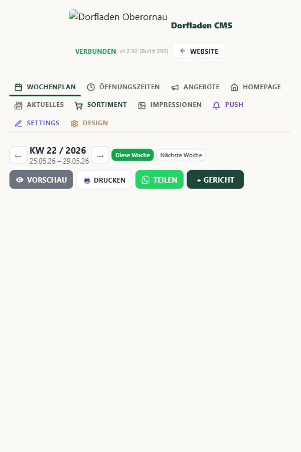
Oben rechts im CMS-Kopf befindet sich das Status- und Informationsfeld:
v1.3.43 (Build 343)) an.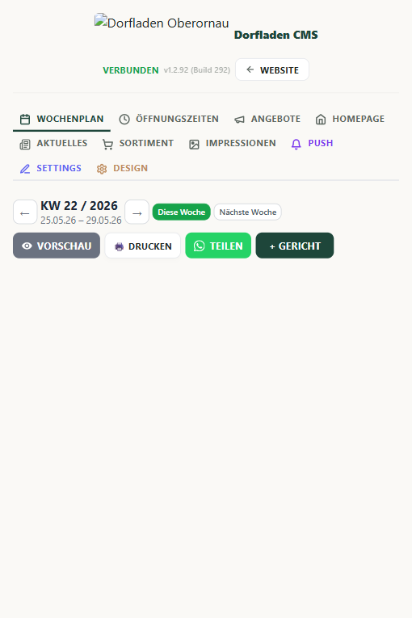
In diesem Bereich planen Sie den täglichen Mittagstisch (Montag bis Freitag) für Ihre Kunden. Jedes eingetragene Gericht wird sofort dekorativ auf der Website dargestellt.
← und →, um wochenweise vor- oder zurückzublättern. Die Schnellwahlschaltflächen „Diese Woche“ und „Nächste Woche“ bringen Sie sofort zum gewünschten Zeitraum.Schweinsbraten mit Kartoffelknödel.mit hausgemachter Biersauce und Blaukraut.9,80).| Schaltfläche | Was sie bewirkt |
|---|---|
| ← / → | Blättert eine Woche vor oder zurück. Die angezeigte Kalenderwoche und der Zeitraum aktualisieren sich sofort. |
| Diese Woche | Springt direkt zur aktuellen Kalenderwoche – egal wo Sie sich in der Navigation befinden. |
| Nächste Woche | Springt direkt zur kommenden Kalenderwoche für die Vorplanung. |
| + Gericht | Öffnet die Eingabemaske für ein neues Tagesgericht. Wochentag, Gerichtsname, Zusatzinfo und Preis können eingetragen werden. |
| ✏️ Bearbeiten | Öffnet ein bestehendes Gericht zum Ändern. |
| 🗑 Löschen | Entfernt ein Gericht aus dem Wochenplan nach Bestätigungsdialog dauerhaft. |
| 💾 Speichern | Sichert das neue oder bearbeitete Gericht dauerhaft in der Datenbank und aktualisiert die Homepage sofort. |
| Abbrechen | Schließt die Eingabemaske ohne zu speichern. |
| Generiert ein A4-Wochenplan-Plakat und öffnet den Druckdialog – ideal für den Aushang im Laden. | |
| 📲 Teilen | Erstellt ein hochauflösendes PNG-Bild des Wochenplans, lädt es herunter und öffnet WhatsApp mit einem vorbereiteten Werbetext für den Versand an Kunden. |
| ↩ Verwerfen | Macht alle ungespeicherten Änderungen rückgängig und stellt den letzten gespeicherten Zustand aus der Datenbank wieder her. |
Wenn Sie Änderungen im Wochenplan-Design oder bei Gerichten vornehmen, erzeugt das CMS im Hintergrund automatische Live-Previews für die Homepage. Sollten Sie sich umentscheiden oder Fehler gemacht haben, können Sie alle ungespeicherten Entwürfe über die Schaltfläche „↩ Verwerfen“ rückgängig machen.
Das System greift hierbei auf ein sicheres Abbild (Snapshot) des letzten persistently in Microsoft Dataverse gespeicherten Zustands zurück und stellt diesen exakt wieder her. Alle flüchtigen Live-Änderungen werden sicher verworfen.
Wenn Sie im Wochenplan-Reiter auf die Schaltfläche „🖨️ Drucken“ klicken, passiert Folgendes im Hintergrund:
@media print) im Dokument erzeugt. Diese schaltet alle Navigationselemente, Knöpfe, Statusleisten und Hintergründe des Webbrowsers vollständig stumm, skaliert das Wochenplakat auf exakt 100% Breite und öffnet direkt das systemeigene Druckmenü Ihres Rechners oder Handys zum unkomplizierten A4-Ausdruck für das Ladenregal.Klicken Sie auf „Teilen“, um den Mittagstisch blitzschnell an Kunden oder Gruppenchats zu senden:
mittagstisch-kw23.png) an.https://wa.me/), fügt den vorbereiteten Text ein und ermöglicht es Ihnen, diesen mitsamt dem heruntergeladenen Plakatbild direkt mit einem Fingertipp an Ihre Kunden zu senden!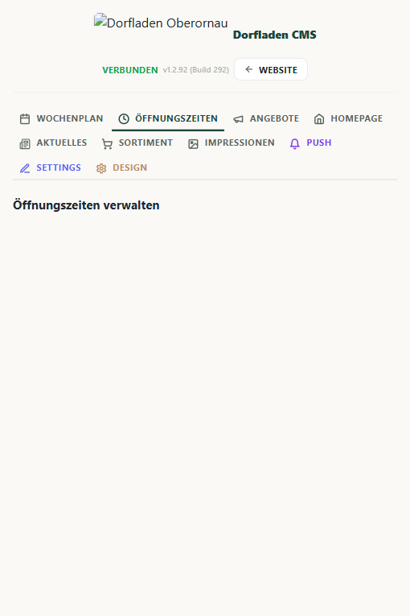
Die korrekte Anzeige der Öffnungszeiten ist essenziell für Ihre Kunden. Die Website berechnet aus diesen Daten in Echtzeit, ob der Laden aktuell „GEÖFFNET“ oder „GESCHLOSSEN“ hat, inklusive eines Countdowns (z. B. „Schließt in 45 Minuten“).
HH:MM ein (z. B. 07:30 bis 18:00).07:30 - 12:30; 14:00 - 18:00).geschlossen hinein. Das System erkennt dies automatisch.| Schaltfläche | Was sie bewirkt |
|---|---|
| 💾 Speichern | Schreibt alle Öffnungszeiten dauerhaft in die Datenbank. Die Homepage zeigt den aktuellen Öffnungsstatus (Geöffnet / Geschlossen inkl. Countdown) sofort aktualisiert. |
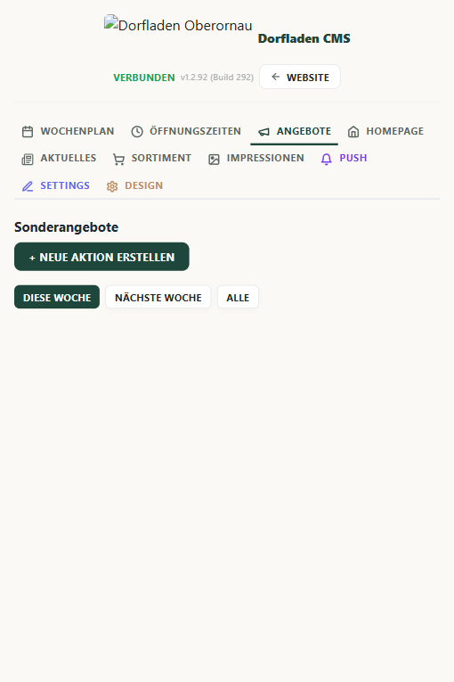
Hier steuern Sie die wöchentlich wechselnden Rabatte und Aktionen.
Angebote KW 23) und definieren Sie das Start- und Enddatum.Goldsteig Butter 250g.1,65).1,99). Das System ermittelt daraus vollautomatisch den Rabatt (z. B. -17%).Das Angebote-System unterscheidet zwischen „Diese Woche" und „Nächste Woche". Kunden sehen auf der Homepage einen Umschalter und können bereits vorab die Aktionen der kommenden Woche einsehen.
| Schaltfläche | Was sie bewirkt |
|---|---|
| + Neue Aktion erstellen | Öffnet die Eingabemaske für eine neue Werbekampagne. Sie vergeben einen Titel, ein Start- und Enddatum sowie beliebig viele Artikel mit Aktions- und Statt-Preis. |
| ✏️ Bearbeiten | Öffnet eine bestehende Aktion zur Bearbeitung. Artikel können hinzugefügt, geändert oder entfernt werden. |
| 🗑 Löschen | Löscht eine gesamte Aktion mit allen zugehörigen Artikeln nach Bestätigung dauerhaft aus der Datenbank. |
| 💾 Speichern | Sichert alle Eingaben der Aktion. Die Artikel werden einzeln in Dataverse gespeichert und sind sofort auf der Homepage sichtbar. |
| Abbrechen | Schließt das Formular ohne Speichern. Alle Eingaben in der aktuellen Maske gehen verloren. |
| + Artikel hinzufügen | Fügt eine neue Zeile für einen weiteren Angebotsartikel in der Maske hinzu. |
| ✕ (Artikelzeile) | Entfernt eine einzelne Artikelzeile aus der Aktionsmaske. |
| 🔍 (Artikelsuche) | Sucht den Artikel in der Preisliste anhand der eingetippten Artikelnummer oder des Namens und befüllt Preis und Bild automatisch. |
| 📷 Bild hochladen | Öffnet den Datei-Auswahldialog für ein Artikelfoto. Das Bild wird automatisch auf 500×500 Pixel komprimiert (75% JPEG) und in der Datenbank gespeichert. |
| 🔗 Teilen | Erstellt ein WhatsApp-taugliches Angebots-Bild und öffnet WhatsApp mit vorbereiteter Nachricht. |
| 👁 Vorschau | Zeigt das Angebot als Plakat-Vorschau an, exakt so wie es auf dem gedruckten Flyer erscheinen würde. |
Sobald Sie ein Artikelfoto hochladen, optimiert das CMS das Bild im Hintergrund: Es wird herunterskaliert, um Speicherplatz zu sparen, behält dabei jedoch eine knackige Kantenschärfe für den Flyer-Druck.
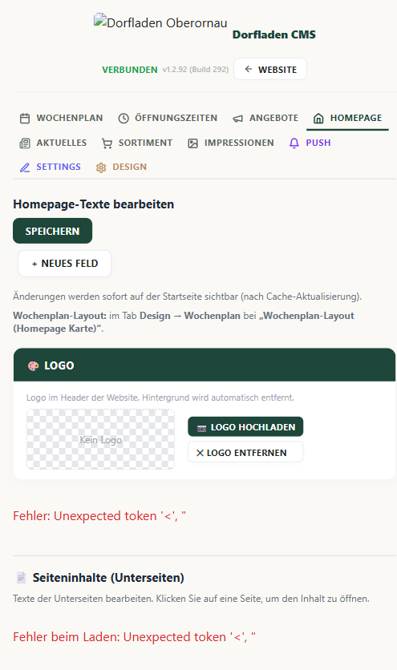
Sie benötigen keine Programmierkenntnisse, um die Texte Ihrer Startseite aufzufrischen. Im Reiter „Homepage“ verwalten Sie die zentralen Elemente:
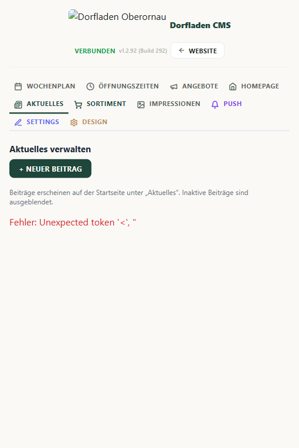
Nutzen Sie diesen Bereich für Ankündigungen, Termine von genossenschaftlichen Versammlungen, neue Lieferanten oder Urlaubsankündigungen.
| Schaltfläche | Was sie bewirkt |
|---|---|
| + Neuer Beitrag | Öffnet die Eingabemaske für einen neuen News-Beitrag mit Titel, Text, optionalem Foto und Datum. |
| ✏️ Bearbeiten | Öffnet einen bestehenden Beitrag zur Änderung von Text, Bild oder Datum. |
| 🗑 Löschen | Entfernt den Beitrag dauerhaft aus der Datenbank und vom News-Archiv der Homepage. |
| 💾 Speichern | Veröffentlicht den Beitrag sofort auf der Homepage. Der neuste Beitrag wird automatisch auf der Startseite hervorgehoben. |
| Abbrechen | Schließt die Eingabemaske ohne zu speichern. |
| 🔄 Status umschalten | Wechselt zwischen „Veröffentlicht“ und „Entwurf“. Entwürfe sind nur im CMS sichtbar, nicht auf der öffentlichen Website. |
/aktuelles.html.
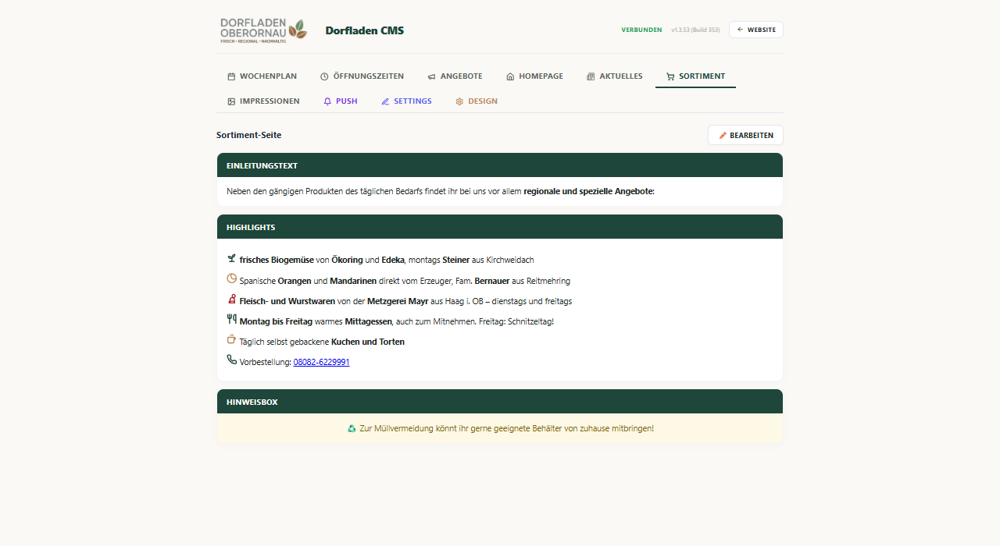
Die Preisliste ist in logische Sektionen unterteilt (z. B. Milchprodukte, Backwaren, Getränke, Obst & Gemüse). Kunden können auf der Website das Sortiment durchsuchen und gezielt filtern.
500g) und Preis ein.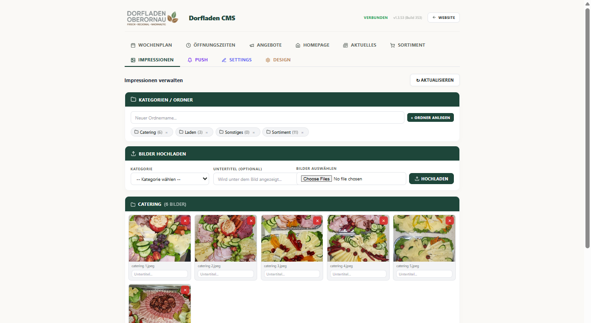
Bilder von regionalen Erzeugern, dem freundlichen Team oder gemütlichen Kaffeeecken laden Kunden ein.
Jedes Bild kann einer Kategorie zugeordnet werden. Auf der Impressionen-Seite erscheinen dann automatisch Kategorie-Filter-Tabs (z. B. Laden, Mittagstisch, Team, Veranstaltungen), damit Kunden gezielt nur Bilder einer Kategorie sehen.
Mittagstisch). Mehrere Bilder können dieselbe Kategorie erhalten.Alle. Hat die Galerie weniger als zwei Kategorien, werden die Filter-Tabs auf der Homepage automatisch ausgeblendet.Mittagstisch – nicht mal Mittagessen. Unterschiedliche Schreibweisen erzeugen separate Tabs auf der Homepage.
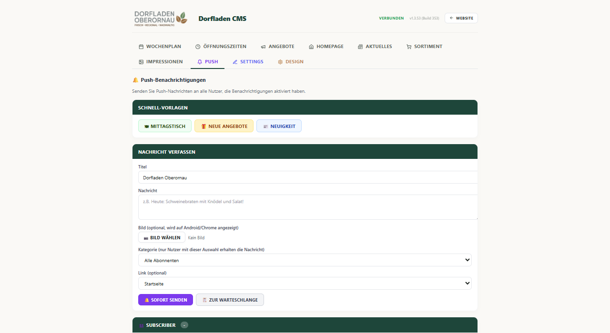
Push-Mitteilungen sind ein mächtiges Marketing-Instrument. Sie poppen direkt auf dem Startbildschirm des Kunden auf, sofern dieser den Benachrichtigungen auf der Homepage einmalig zugestimmt hat.
| Schaltfläche | Was sie bewirkt |
|---|---|
| 🍽 Mittagstisch | Befüllt Titel und Text automatisch mit einer fertigen Vorlage für den neuen Wochenplan. Spart Tipparbeit. |
| 🎁 Neue Angebote | Befüllt das Formular mit einer Vorlage für frische Sonderangebote. |
| 📰 Neuigkeit | Befüllt das Formular mit einer Vorlage für einen neuen News-Beitrag. |
| 🔔 Sofort senden | Sendet die Push-Nachricht sofort an alle aktiven Abonnenten. Der Versand läuft im Hintergrund – Sie sehen eine Bestätigung mit Anzahl erreichter Geräte. |
| Aktualisieren (Subscriber) | Lädt die aktuelle Abonnenten-Liste frisch aus der Datenbank und zeigt Geräte-ID, Browser-Typ und Anmeldezeitpunkt. |
| 🗑 Löschen (Subscriber) | Entfernt einen einzelnen Abonnenten sofort aus der Datenbank. Er erhält keine weiteren Push-Mitteilungen mehr. |
Sie können den Titel (max. 50 Zeichen) und den Text (max. 150 Zeichen) auch komplett frei schreiben. Klicken Sie anschließend auf „🔔 Sofort senden“.
Das System speichert alle Push-Empfänger anonymisiert in der Dataverse-Datenbank. Die Abonnenten-Verwaltung ist direkt im Push-Tab zugänglich:
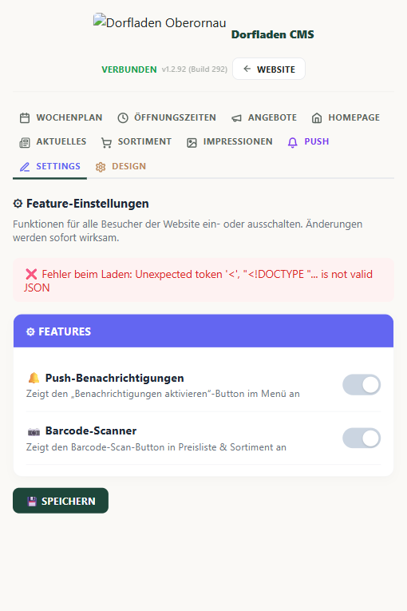
| Schaltfläche | Was sie bewirkt |
|---|---|
| 💾 Speichern | Sichert alle Stammdaten (Name, Adresse, Kontakt, Social Media) dauerhaft. Die Änderungen erscheinen sofort im Impressum und Footer der Homepage. |
Im Reiter „Settings“ pflegen Sie die grundlegenden Stammdaten des Dorfladens. Diese werden an unzähligen Stellen der Website verwendet (z. B. im Impressum, auf der Kontaktseite, im Fußbereich und im Header):
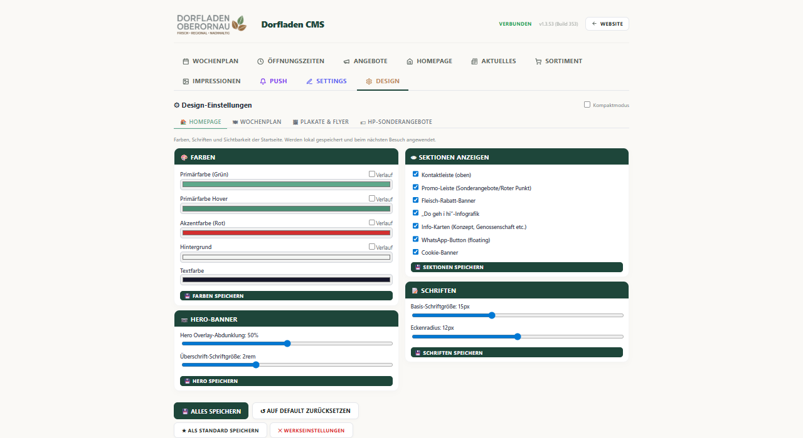
Im Reiter „Design“ passen Sie die globalen Design-Richtlinien für Ihre Druckmedien an. Das System generiert daraus vollautomatisch druckreife Flyer und Plakate.
| Schaltfläche | Was sie bewirkt |
|---|---|
| 💾 Alles speichern | Schreibt alle aktuellen Design-Einstellungen dauerhaft in die Datenbank. Erst nach diesem Klick sind die Änderungen auf der Live-Homepage sichtbar. |
| ↺ Auf Default zurücksetzen | Verwirft alle ungespeicherten Änderungen und lädt die zuletzt gespeicherten Werte zurück. Hat jemand eigene Standards gespeichert, werden diese zurückgeladen – sonst die Werksvoreinstellungen. |
| ★ Als Standard speichern | Speichert die aktuellen Einstellungen als neuen persönlichen Standard. Dieser Standard wird künftig beim „Auf Default zurücksetzen" als Ausgangspunkt verwendet – ideal wenn Sie Ihr Corporate-Design einmalig festgelegt haben. |
| ✕ Werkseinstellungen | Löscht Ihren gespeicherten persönlichen Standard vollständig und setzt das System auf die Original-Werksfarben zurück. Achtung: dieser Schritt kann nicht rückgängig gemacht werden! |
| ↺ Verwerfen | Bricht alle Änderungen seit dem letzten Speichern ab und stellt den vorherigen Zustand wieder her – ohne zu speichern. |
| + Vorlage speichern | Legt die aktuellen Plakat- oder Flyer-Einstellungen als benannte Vorlage ab. Vorlagen erscheinen in der Liste unterhalb und können jederzeit per Klick wieder angewendet werden. |
| ↺ Farben zurücksetzen | Setzt nur die Template-Farben des aktuell gewählten Designs (z. B. Classic Red) auf die Ursprungsfarben des Templates zurück, ohne andere Einstellungen zu berühren. |
Um die Benutzeroberfläche des Design-Tabs übersichtlich zu halten – besonders auf kleineren Monitoren oder Laptops – wurde ein intelligenter Kompaktmodus integriert:
.cms-compact-on) stark zusammen. Ausführliche Beschreibungen und Hilfetexte werden sanft ausgeblendet.Der Kachel- und Einzelflyer-Editor ermöglicht Ihnen die zentimetergenaue Gestaltung einzelner Aktionskarten. Jedes Element (Hauptbild, Preis, Text, Hintergrund-Ghost, Logos) lässt sich individuell arrangieren.
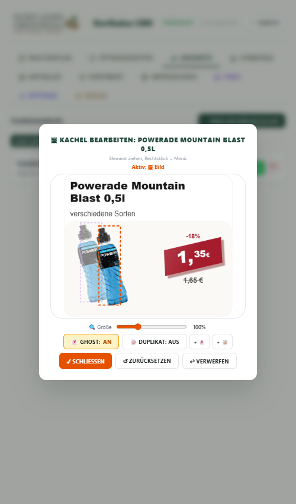
| Schaltfläche | Was sie bewirkt |
|---|---|
| 💾 Speichern | Sichert alle Positionen, Größen, Drehungen und Effekte der aktuellen Kachel dauerhaft. Die Kachel wird für den Flyer-Druck und die Homepage-Anzeige übernommen. |
| ↩ Verwerfen | Macht alle Änderungen seit dem letzten Speichern rückgängig und stellt den vorherigen Zustand der Kachel wieder her. |
| ⭐ Ghost: AUS / AN | Schaltet den Ghost-Effekt (halbtransparente Produktbild-Kopie im Hintergrund) ein oder aus. Erzeugt einen plastischen 3D-Eindruck auf dem Plakat. |
| 📄 Duplikat | Erstellt eine volldeckende (100% Deckkraft) Kopie des Produktbilds zusätzlich zur Ghostkopie. |
| + 👻 / + 📝 | Fügt eine weitere Ghost- bzw. Textkopie zur Kachel hinzu. Jede Kopie ist unabhängig verschiebbar, drehbar und skalierbar. |
| ✕ (Kopienliste) | Löscht eine einzelne Kopie (Ghost oder Duplikat) von der Kachel. |
| ⫠ 0° | Setzt die Drehung des aktuell gewählten Elements sofort auf 0° zurück – gerade ausrichten per Klick. |
| ↑ ↓ ← → (D-Pad) | Verschiebt das aktive Element pixelgenau in die jeweilige Richtung. Das D-Pad beschriftet sich automatisch mit dem Namen des gerade gewählten Elements. |
| ⊕ Overlay | Öffnet den Datei-Dialog um ein eigenes Bild (z. B. Bio-Siegel, Stern-Grafik) als Overlay auf die Kachel zu legen. |
| ⋯ Kontextmenü | Öffnet per Rechtsklick (Desktop) oder langem Tippen (Mobil) ein Menü mit weiteren Aktionen: Overlay hinzufügen, Kopie löschen, Element in Vordergrund / Hintergrund schieben. |
Um ein Element zu bearbeiten, müssen Sie es anklicken oder antippen.
Aktiv: 👻 Ghost) zeigt Ihnen unmissverständlich an, was Sie gerade steuern.Sie können Elemente direkt mit der Maus oder dem Finger auf dem Vorschaubild verschieben.
stopPropagation) bleibt Ihre Auswahl absolut stabil, selbst wenn Sie mit der Maus den Editierbereich kurzzeitig verlassen.⋯.Ihnen steht ein hochpräziser Rotations-Slider zur Verfügung:
-15°).Für ein aufgeräumtes Layout steuert das kombinierte D-Pad alle verschiebbaren Elemente:
Verschieben: 🖼️ Bild oder Verschieben: 👻 Ghost). Sie wissen sofort, welches Element Sie mit den Richtungspfeilen feinjustieren.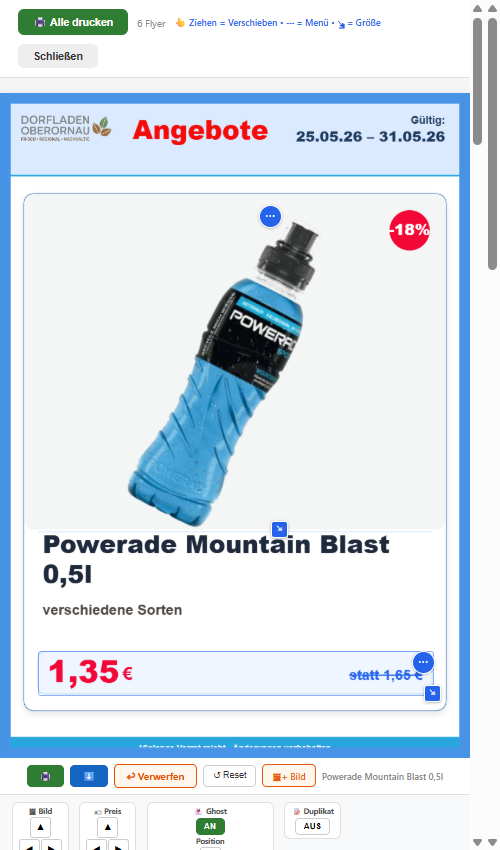
Der Ghost-Effekt erzeugt eine halbtransparente Kopie des Produktbilds im Hintergrund – ideal für plastische, dreidimensionale Effekte.
👻 Ghost. Es wird eine schattierte Kopie erzeugt. Nutzen Sie den Deckkraft-Regler (10% bis 90%), um die Transparenz anzupassen.+ 👻 und + 📝 können Sie beliebig viele weitere Kopien auf die Kachel werfen. Jede Kopie erhält eine eigene Zeile in der Kopienliste und lässt sich eigenständig drehen, skalieren und verschieben.✕ in der Liste oder via Rechtsklick-Kontextmenü entfernt die Kopie sofort.Ein roter Warnbanner schützt Sie vor unbeabsichtigtem Schließen ohne Speichern:
⚠️ UNGESPEICHERT.
Über das Kontextmenü (Rechtsklick oder ⋯) können Sie eine eigene Grafik als Overlay hochladen. Dies eignet sich hervorragend für:
Beim Hochladen von eigenen Bildern (für Artikel, Overlays oder Beitragsfotos) sorgt ein integrierter Algorithmus vollautomatisch für beste Ladezeiten im ländlichen Mobilfunknetz:
Die Dorfladen-Homepage ist eine moderne, blitzschnelle Single-Page-Anwendung. Sobald Sie im CMS Daten speichern, speist das System diese in die Microsoft-Cloud ein. Beim nächsten Aufrufen der Website durch einen Kunden lädt diese die aktuellen Datensätze und baut die Seiten dynamisch auf.
| Seite | Inhalt | Aktualisierungsintervall |
|---|---|---|
Startseite (/index.html) | Laden-Begrüßung, Header-Banner, aktuelle Sonderangebote, Live-Öffnungszeitensystem | Sofort bei Laden |
Angebote (/angebote.html) | Große, bildstarke Übersicht aller wöchentlichen Sonderangebote mit Ersparnisanzeige | Sofort bei Laden |
Mittagstisch (/wochenplan.html) | Der wöchentliche Speiseplan mit Kalenderauswahl und Preisen | Sofort bei Laden |
Aktuelles (/aktuelles.html) | Alle verfassten News-Beiträge in chronologischer Reihenfolge | Sofort bei Laden |
Preisliste (/preisliste.html) | Filterbares, durchsuchbares Sortimentsverzeichnis des Dorfladens | Sofort bei Laden |
Impressionen (/bilder.html) | Bildergalerie mit stimmungsvollen Aufnahmen und Textbeschreibungen | Sofort bei Laden |
Hier finden Sie praktische, problemorientierte Hilfestellungen für typische alltägliche Aufgaben im CMS:
Lösung: Aktivieren Sie die automatische Bildfreistellung des CMS.
Lösung: Snapshot-basierte Verwerfen-Funktion nutzen.
Lösung: Foto im Kachel-Editor verschieben oder skalieren.
Lösung: Custom Overlay Image hochladen und stufenlos drehen.
-15° ziehen.Lösung: Ghost-Effekt im Kachel-Editor aktivieren.
30% senken für einen räumlichen Schatteneffekt.Lösung: PWA auf Startbildschirm installieren.
Lösung: Startdatum in der Zukunft setzen.
Lösung: Browser-Cache leeren.
Lösung: Werkseinstellungen im Design-Tab aufrufen.
Lösung: Teilen-Workflow korrekt ausführen.
mittagstisch-kwXX.png).Das CMS komprimiert Bilder beim Upload automatisch auf 500×500 Pixel / 75% JPEG für optimale Ladezeiten. Für scharfen A4-Druck empfehlen sich Originalbilder mit mindestens 800×800 Pixeln. Laden Sie ein höher aufgelöstes Ausgangsbild hoch.
Der Slider wirkt immer auf das aktuell selektierte Element (gestrichelter Rahmen). Zuerst das gewünschte Element anklicken, dann den Slider bewegen. Die Schaltfläche „⫠ 0°" setzt die Rotation absichtlich sofort auf null – das ist kein Fehler.
Klicken Sie auf „↩ Verwerfen". Der Editor schließt sich und stellt den Zustand vor dem Öffnen wieder her. Der rote Banner ⚠️ UNGESPEICHERT verschwindet.
Tab Aktuelles → 🗑 Löschen neben dem Beitrag → Dialog bestätigen. Alternativ: 🔄 Status umschalten → „Entwurf" – der Beitrag bleibt erhalten, ist aber öffentlich unsichtbar.
Ja. Das System unterstützt beliebig viele parallele Aktionen. Empfehlung: pro Woche eine Haupt-Aktion mit allen Artikeln statt vieler kleiner Aktionen für bessere Übersicht.
Im Browser-Druckdialog prüfen: Papierformat A4, Seitenränder Keine / Minimal, Option „Hintergrundgrafiken drucken" aktiviert.
Tab Öffnungszeiten → betreffenden Wochentag auf Feiertagszeiten ändern → 💾 Speichern. Am Folgetag Normalzeiten wieder eintragen. Ein dediziertes Ausnahmedatum-Feld ist für eine zukünftige Version geplant.
Das Logo muss im Tab Homepage unter „Logo-Verwaltung" hochgeladen und gespeichert werden. Unterstützte Formate: PNG (mit Transparenz empfohlen), JPG, WebP.
Sicherstellen, dass im Tab Sortiment nach jeder Änderung auf 💾 Speichern geklickt wurde. Danach Hard-Refresh auf der Preislisten-Seite (Strg+Shift+R).
Tab Impressionen → 🗑-Symbol unter dem Bild → Dialog bestätigen. Das Bild wird sofort aus Datenbank und öffentlicher Galerie entfernt.
Ja. Beim Hochladen oder nachträglich im Bild-Panel das Feld „Kategorie" ausfüllen (z. B. Team, Produkte, Laden). Filter-Tabs erscheinen erst wenn mindestens zwei verschiedene Kategorien mit je mindestens einem Bild belegt sind.
Browser blockiert möglicherweise Pop-ups: Adressleiste → Seiteneinstellungen → Pop-ups für CMS-Seite erlauben. Auf Mobilgeräten muss WhatsApp installiert sein.
Ja. Wochennavigation im Wochenplan-Tab nutzen (→ Nächste Woche) und Gerichte für beliebige Zukunftswochen eintragen. Die Homepage zeigt automatisch immer die aktuelle Kalenderwoche.
Groß-/Kleinschreibung und Sonderzeichen prüfen – Augensymbol 👁 neben dem Feld nutzen. Falls Browser-Autofill einen falschen Wert einträgt: Feld manuell leeren und Passwort neu eintippen.
Grundsätzlich ja. Wenn aber zwei Personen denselben Datensatz gleichzeitig bearbeiten und speichern, gewinnt das zuletzt gespeicherte Ergebnis. Es gibt keinen Sperrmechanismus – Bearbeitung im Team koordinieren.
Oben rechts im CMS-Kopf: ● grüner Kreis + „Verbunden" = aktive Dataverse-Verbindung. Roter Warnhinweis = Verbindungsproblem, Speichern schlägt fehl.
Nein – das Löschen ist unwiderruflich. Der Nutzer muss den Push-Button auf der Homepage erneut antippen, um wieder in die Abonnenten-Liste aufgenommen zu werden.
Filter-Tabs erscheinen erst wenn mindestens zwei verschiedene Kategorien mit je mindestens einem Bild belegt sind. Bei nur einer Kategorie werden sie automatisch ausgeblendet.
Tab Settings → vollständige URLs eintragen (z. B. https://www.facebook.com/DorfladenOberornau) → 💾 Speichern. Symbole erscheinen sofort in Header und Footer.
„★ Als Standard speichern" legt Ihre Einstellungen als persönlichen Standard ab. „✕ Werkseinstellungen" löscht diesen Standard und kehrt zu den Original-Werksvorgaben zurück. Ein anschließendes „↺ Auf Default zurücksetzen" lädt dann die Werksvorgaben, nicht mehr Ihren persönlichen Standard.
Im Druckdialog die Option „Hintergrundgrafiken drucken" aktivieren. In Chrome: Druckmenü → Weitere Einstellungen → Hintergrundgrafiken einschalten.
Der Scanner (Quagga.js) benötigt Kamerazugriff. Prüfen: Browser hat Kamera erlaubt? Ausreichende Beleuchtung vorhanden? EAN-/UPC-Strichcode vollständig im Rahmen? Auf Desktop-Browsern ohne Kamera ist der Scanner nicht verfügbar.
Tab Sortiment → betreffende Kategorie suchen → beim doppelten Eintrag auf 🗑 Löschen klicken und Dialog bestätigen. Danach den verbleibenden Eintrag auf korrekten Preis prüfen.
Dieser Banner erscheint im Kachel-Editor sobald Änderungen an einer Kachel noch nicht mit 💾 Speichern gesichert wurden. Verlassen Sie den Editor nicht ohne vorher zu speichern oder „↩ Verwerfen" zu klicken – sonst gehen Änderungen verloren.
Tab Push → Unterreiter Subscriber → „Aktualisieren" klicken. Die Gesamtzahl aktiver Abonnenten wird oben in der Subscriber-Ansicht prominent angezeigt.
Nein – einmal gelöschte Beiträge sind dauerhaft aus der Datenbank entfernt. Empfehlung: Beiträge lieber über 🔄 Status umschalten in den Entwurfsmodus versetzen statt zu löschen.
Dorfladen CMS – Offizielles Anwenderhandbuch • Version 1.3.43 • Stand: Mai 2026
Bei technischen Fragen wenden Sie sich an Ihren Administrator.